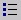

|
Op de tab Verblijfsgebied kunnen de in dat verblijfsgebied gelegen verblijfsruimten worden opgegeven. De kenmerken van de ruimte kunnen hier worden ingevoerd, maar het is ook mogelijk om dit op de tab Verblijfsruimte te doen. Verblijfsgebieden kunnen alleen worden gedefinieerd indien de status van een project is ingesteld op 'nieuwbouw'. De status van een project is in te stellen op tab Project. Op het scherm worden ook de resultaten van verschillende berekeningen van de gevelgeluidwering (GA), het binnenniveau (LA) en de krakteristieke gevelgeluidwering GA,k (alleen nieuwbouw) van de ruimte(n) weergegeven.
Tab Verblijfsgebied
| Omschrijving | Dit invoerveld kan maximaal 80 tekens bevatten, maar mag niet leeg zijn |
 | TABEL VERBLIJFSGEBIEDEN |
| Verblijfsruimten | In deze tabel kunnen regels worden ingevoegd, gekopieerd, verwijderd en verplaatst. Dit kan door middel van de knoppen [Nieuw] (sneltoets <ctrl>+<ins>), [Kopiëren], [Verwijder] (sneltoets <ctrl>+<del>) of met een contextmenu. Dit laatste menu is op te roepen met de rechter muistoets. De volgorde van verblijfsruimten kan worden gewijzigd met behulp van de pijltjestoetsen en onder de tabel. Wanneer een verblijfsruimte naar boven of naar beneden wordt verplaatst, gebeurt zowel in de tabel, als in de boom.
In het contextmenu kan ook een extra optie 'ga naar' worden gekozen. Met deze optie wordt gesprongen naar de verblijfsruimte die op dat moment is geselecteerd in de tabel. |
Door eenmaal met de linker muistoets op een regel te klikken is de naam van de verblijfsruimte te wijzigen. Een verblijfsgebied heeft altijd een verblijfsruimte. Als de laatste verblijfsruimte wordt verwijderd dan wordt een nieuwe lege verblijfsruimte toegevoegd.
| Omschrijving | Een regel kan maximaal 80 tekens bevatten, maar mag niet leeg zijn. |
| Vloeroppervlak | Invoerveld voor het vloeroppervlak van de verblijfsruimte, waarbij de waarde tussen 0 en 10000 moet liggen. |
| H | Invoerveld voor de hoogte van de verblijfsruimte, waarbij de waarde tussen 0 en 10000 moet liggen. |
| V | Invoerveld voor het volume van de verblijfsruimte, waarbij de waarde tussen 0 en 10000 moet liggen. Als het vloeroppervlak en de hoogte achter elkaar worden ingevoerd dan berekent het programma automatisch het volume. |
| T0 | Invoerveld voor de referentienagalmtijd, waarbij de waarde tussen 0 en 10 moet liggen. Standaard staat hier altijd 0.5 seconde, tenzij is gekozen voor onderwijsfunctie, dan staat hier 0.8 seconde. De functie van een variant kan worden ingesteld op tab Variant. |
| Stot | Weergave van het totale geveloppervlak van de verblijfsruimte. |
| GA | Weergave van de geluidswering van de gevel van de verblijfsruimte. |
| Lbi | Weergave van het binnenniveau van de verblijfsruimte. |
| GA;k | Weergave van de karakteristieke geluidswering van de gevel van de verblijfsruimte. Indien de waarde rood is weergegeven wordt niet voldaan aan de eis gesteld in het Bouwbesluit. |
| Totaal | Hier wordt het totale vloeroppervlak, volume en geveloppervlak weergegeven van alle verblijfsruimten samen. |
| Eis | Onderaan worden ter informatie de wettelijke eisen die van toepassing zijn weergegeven. Opgemerkt wordt dat hier eigenlijk hoort te staan > en <. Echter niet alle computers kunnen deze tekens weergeven op het beeldscherm. Derrhalve is ervoor gekozen het teken > respectievelijk < weer te geven. |
|